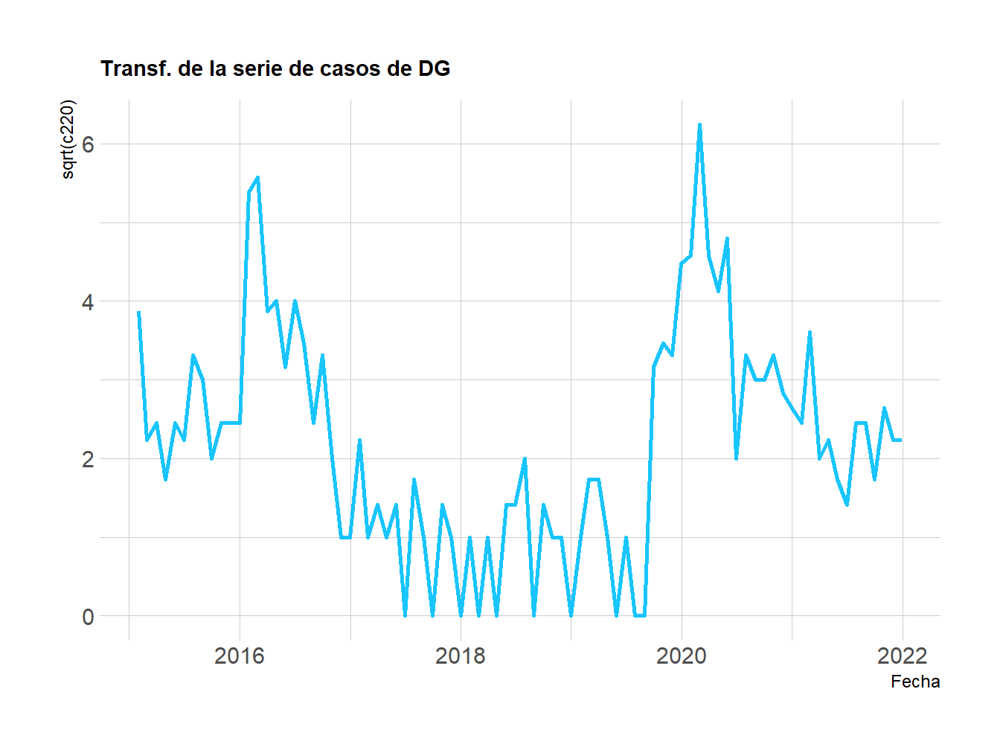
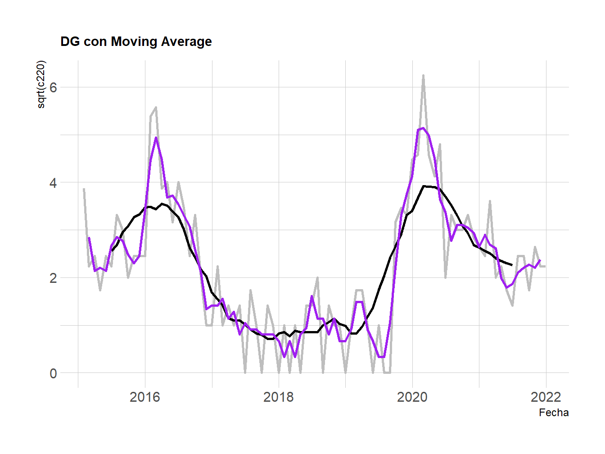
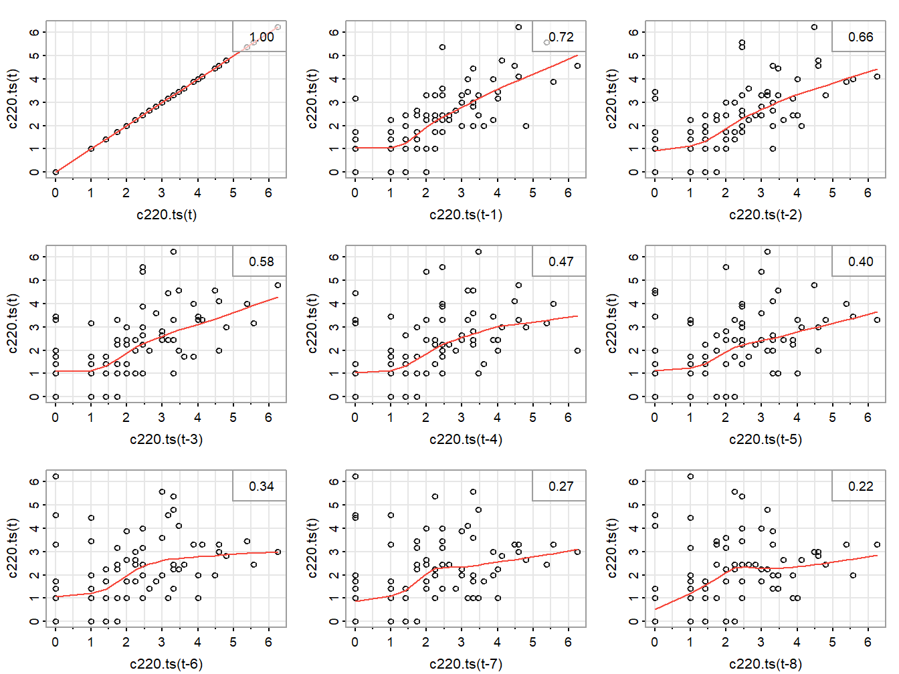
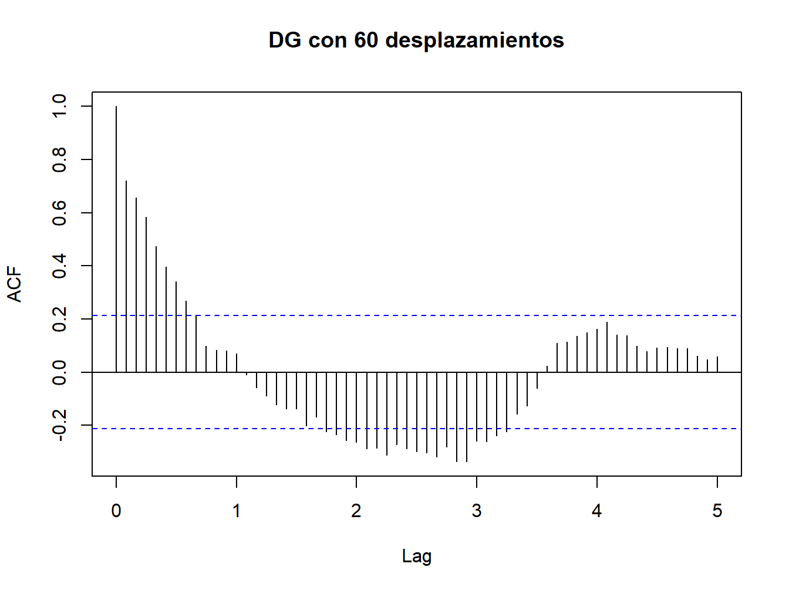
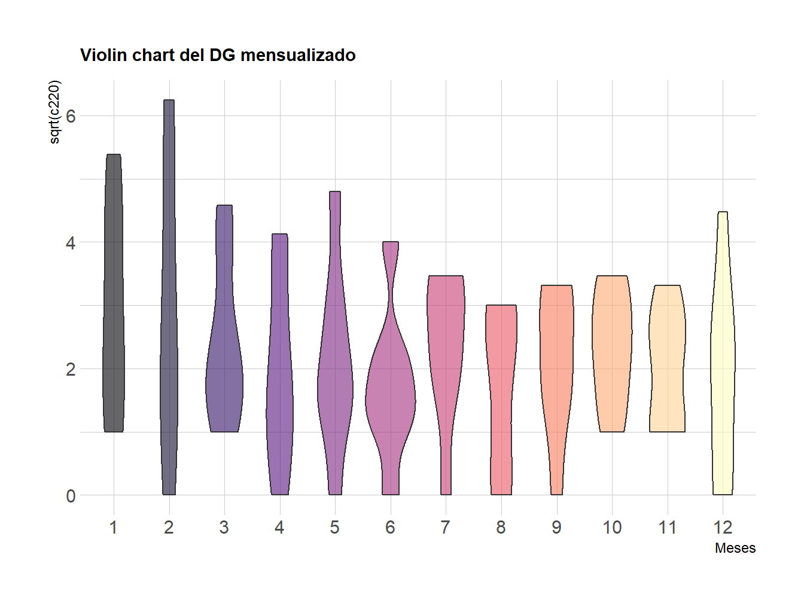
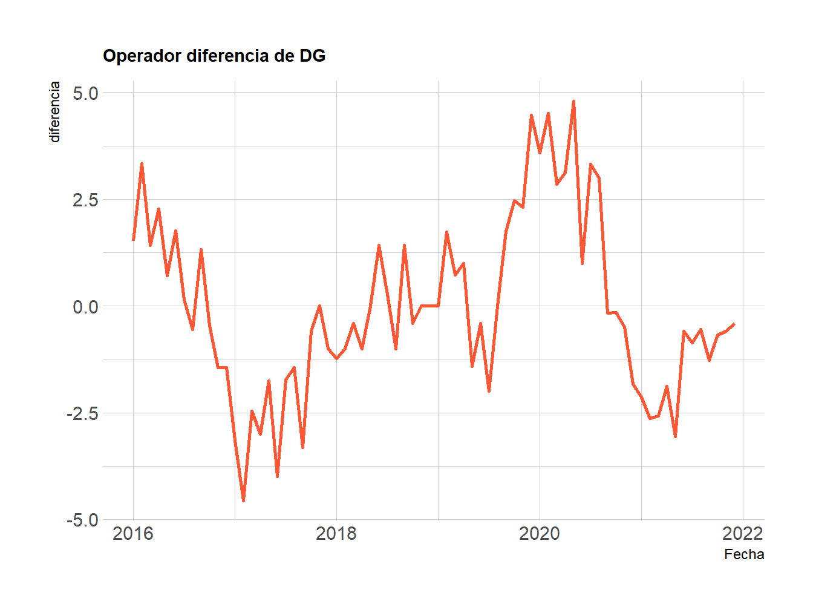

Capítulo 1 Análisis Exploratorio Inicial
1.1 Primeras impresiones
El primer paso consiste en realizar la ingesta de datos y realizar una inspección de una muestra de los registros.
Rows: 84
Columns: 2
$ date <date> 2015-01-31, 2015-02-28, 2015-03-31, 2015-04-30, 2015-05-31, 2015…
$ c220 <dbl> 15, 5, 6, 3, 6, 5, 11, 9, 4, 6, 6, 6, 29, 31, 15, 16, 10, 16, 12,…La base de datos consta de 84 registros e incluye dos variables: la primera es la fecha del último día del mes del registro; y la segunda es la cantidad acumulada de casos de dengue grave durante ese mes. La primera variable se reconoce como tipo fecha, mediante una manipulación inicial; y la segunda es una variable numérica.
Como parte del proceso de exploración se validaron los siguientes elementos:
Primero, se trata efectivamente de un objeto de la clase serie de tiempo.
[1] "ts"Segundo, el primer registro corresponde a enero del 2015.
[1] 2015 1Y tercero, el último dato de la serie de tiempo corresponde a diciembre del 2022.
[1] 2021 12Un breve resumen permite identificar que el valor máximo de casos de dengue grave (DG) en Cali durante el periodo de análisis es de 39 episodios en un mes, mientras que el valor mínimo es cero.
c220
Min. : 0.000
1st Qu.: 1.000
Median : 5.000
Mean : 6.821
3rd Qu.:10.000
Max. :39.000 Además, la mitad de los meses bajo análisis tiene hasta cinco contagios, aunque se presentan en promedio unos siete casos de dengue grave por mes. Esto indicaría que la distribución de los casos está sesgada hacia la derecha, y que hay unos valores altos que afectan la media.
1.2 Visualización inicial
A continuación se presenta la gráfica de la variable de interés, los casos de Dengue Grave (DG), representando su evolución en el tiempo.

En la gráfica se destacan dos picos importantes, uno en 2016 y el otro en 2020. Además, la mayoría de los registros son valores relativamente pequeños. Con todo, la primera impresión no da cuenta de alguna tendencia ascendente o descendente, y tampoco de un algun patrón estrictamente repetitivo a lo largo del tiempo.
A continuación se observa la raiz cuadrada de los valores de la serie para intentar facilitar la identificación de patrones de variación. A partir de este punto, esta transformación será la base de incorporación de los otros recursos.

A pesar de que ayuda a estabilizar la varianza, esta aproximación todavía no revela patrones o tendencias evidentes.
1.3 Promedio Móvil
También se utilizó el Promedio Móvil para aproximarse a la serie de tiempo, eliminando algo del ruido de la misma para hacer más clara la tendencia.
En este caso, se decidió hacer un experimento con dos opciones, relacionadas con el número de meses que valdría la pena tener en cuenta para determinar el valor representativo del periodo vigente.
La primera opción consistió en calcular un promedio móvil de doce meses, la cual se presenta en la línea de color negro; y la segunda opción, utilizando los tres meses pasados, y se ilustra en la línea de color púrpura. La línea en color gris son los casos reales de dengue grave.

El comportamiento de las dos opciones evaluadas puede ser útil, sin embargo, se observa un mayor ajuste de parte de la línea púrpura, lo que sugeriría que esa podría ser una ventana de tiempo más conveniente para gestionar a un pico de contagio de DG, ya que responde de forma más eficaz al cambio de la serie.
1.4 Análisis de rezagos
También se realizó un análisis de rezagos para determinar relaciones y patrones entre los valores vigentes y pasados de la serie de tiempo.
El primer recurso que se empleó para el desarrollo de este análisis fue el siguiente conjunto de gráficos de dispersión, los cuales corresponden a la serie y sus desplazamientos hacia atrás en el tiempo. En cada gráfico se incluyen el Coeficiente de Correlación de Pearson.

Se observa una relación positiva en todos desplazamientos, sin embargo, se trata de una relación moderada que tiene su valor más alto en el primer desplazamiento y se debilita con cada nuevo periodo añadido. Además, no se identifican comporamientos que se repitan en determinados periodos.
En cualquier caso, dado que uno de los primeros hallazgos del análisis exploratorio fue evidenciar la existencia de dos picos separados por alrededor de 4 años, se utilizó un segundo recurso para el análsis de rezagos. Esta vez, se propuso emplear una función para evaluar la autocorrelación que puede ser útil para periodos más extensos, como se observa a continación.

La gráfica anterior presenta los valores de autocorrelación de hasta 60 meses y confirma lo indicado en el punto anterior, esto es, que pese a las posibles impresiones generadas, la relación entre valores vigentes y pasados de la serie no es tan prometedora y pareciera que sólo aportaría valor en los periodos transcurridos recientemente.
1.5 Comporamiento mensual
Otro recurso empleado consiste en el análisis de tendencias agregando los datos por mes de ocurrencia, como se observa en seguida.

Este gráfico presenta una visión de la distribución de los datos por mes y es el primero que pareciera evidenciar que hay una cierta estacionalidad oculta en la serie.
Aunque es una idea todavía por validar a través de otros recursos, pareciera que los primeros meses del año podrían ser de especial atención, ya que por la forma de los violines, dichos meses tendrían reiterativamente los registros más altos en términos de número de episodios de dengue grave.
1.6 Operador diferencia
También se decidió representar la serie a través del operador diferencia, con la intención de tener diferentes perspectiva que permitieran reconocer su estructura.

En este caso, se utilizó un rezago de 12 meses. Hasta cierto punto, la gráfica pareciera sugerir un ciclo que abarca varios años, y si ese fuera el caso, podría dificultar la validación del análisis por la disponibilidad de los datos.
1.7 Conclusión preliminar
Considerando los recursos utilizados hasta este momento podría decirse que no resulta tan fácil clasificar los Casos de Dengue Grave en Cali del periodo 2015-2022 como una serie con un patrón estacional, sobre todo porque no se observa un compormiento cíclico tan evidente. No obstante, persisten algunos indicios que sugerirían que vale la pena complementar el análisis para llegar a una conclusión con mayor contundencia.